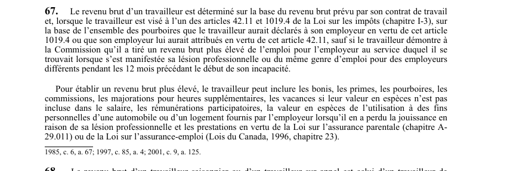

art-67-LATMP : calcul du revenu brut du travailleur
Le revenu brut qui sert à calculer l'indemnité part du contrat de travail, mais le travailleur peut faire reconnaître un revenu réel plus élevé s'il en fait la preuve.
- Base de départ : le revenu brut prévu au contrat de travail.
- Travailleur à pourboires (visé par l'art. 42.11 ou l'art. 1019.4 de la Loi sur les impôts, chapitre I-3) : les pourboires déclarés ou attribués entrent dans la base.
- Exception : le travailleur peut démontrer à la CNESST un revenu brut plus élevé, tiré de l'emploi occupé au moment de la lésion ou du même genre d'emploi chez des employeurs différents, sur les 12 mois précédant le début de l'incapacité.
- Éléments admis pour établir ce revenu plus élevé : bonis, primes, pourboires, commissions, majorations pour heures supplémentaires, vacances dont la valeur en espèces n'est pas déjà dans le salaire, rémunérations participatoires.
- S'y ajoutent la valeur en espèces de l'usage personnel d'une auto ou d'un logement fournis par l'employeur et perdus à cause de la lésion, ainsi que les prestations d'assurance parentale ou d'assurance-emploi.
Visé : travailleur, CNESST · Nature : règle de calcul
🌐 LegisQuébec · 📄 PDF officiel (page 24)
Texte officiel
Le revenu brut d’un travailleur est déterminé sur la base du revenu brut prévu par son contrat de travail et, lorsque le travailleur est visé à l’un des articles 42.11 et 1019.4 de la Loi sur les impôts (chapitre I‐3), sur la base de l’ensemble des pourboires que le travailleur aurait déclarés à son employeur en vertu de cet article 1019.4 ou que son employeur lui aurait attribués en vertu de cet article 42.11, sauf si le travailleur démontre à la Commission qu’il a tiré un revenu brut plus élevé de l’emploi pour l’employeur au service duquel il se trouvait lorsque s’est manifestée sa lésion professionnelle ou du même genre d’emploi pour des employeurs différents pendant les 12 mois précédant le début de son incapacité.
Pour établir un revenu brut plus élevé, le travailleur peut inclure les bonis, les primes, les pourboires, les commissions, les majorations pour heures supplémentaires, les vacances si leur valeur en espèces n’est pas incluse dans le salaire, les rémunérations participatoires, la valeur en espèces de l’utilisation à des fins personnelles d’une automobile ou d’un logement fournis par l’employeur lorsqu’il en a perdu la jouissance en raison de sa lésion professionnelle et les prestations en vertu de la Loi sur l’assurance parentale (chapitre A‐ 29.011) ou de la Loi sur l’assurance-emploi (Lois du Canada, 1996, chapitre 23).
Texte de l’article 67 LATMP, extrait de la couche texte du PDF officiel (page 24), sans OCR ni retouche. La capture ci-dessous et le PDF font foi.
{kind=link}

Toucher l'image pour l'agrandir🔗 Ouvrir a cette page : LATMP.pdf : page 24 · texte a jour au 20 février 2024
Décisions du recueil citant cet article (PDF intégré sur chaque fiche) :
Jurisprudence
- Poma CSSS Bordeaux Cartierville Saint- Laurent (2017 QCTAT 796)
Voir aussi
- 🔧 Modifié par : LMRSST art. 20 · remplace art.
- ↑ Loi : LATMP
Pages qui pointent ici (7)
- art-20-LMRSST : modifie l'art. 67 LATMP Recueil législatif
- Indemnités de remplacement du revenu (IRR) Droit du travail
- Index des décisions : table de travail Recueil législatif
- Index thématique des décisions Recueil législatif
- LATMP : Chapitre III : Indemnités (IRR et préjudice corporel) Recueil législatif
- LMRSST : Chapitre I : Modifications à la LATMP Recueil législatif
- Poma CSSS Bordeaux Cartierville Saint- Laurent Recueil législatif